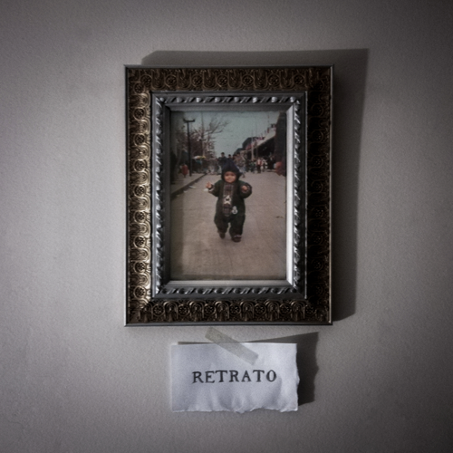

Mi primer álbum, una recopilación de ilustraciones de distintas etapas de la vida de alguien que sufrió por intentar ser distinto a quien en verdad es.
Fecha de publicación: 28 de junio, 2020
Todas las obras fueron compuestas y escritas por mí excepto donde se especifica.
| Título | Música | Letra | Duración |
|---|---|---|---|
| Fractal | Haizel, miauro | - | 5:09 |
| Jaula (ver. Álbum) | - | Yureibana | 5:08 |
| La Luna Sigue Ahí | - | - | 4:28 |
| Ataraxia | - | - | 2:58 |
| Equilibrio Inestable | - | - | 2:17 |
| No Nos Van a Callar (ver. Álbum) | Haizel, CUERVO・計感キラー, Yureibana | Yureibana | 4:05 |
| Nunca Fui Suficiente | - | - | 3:13 |
| Veneno | - | - | 3:42 |
| Crisálida | Haizel, NeqqoVer | - | 5:16 |
Éramos principiantes en la vida
Un grupo de almas que el destino quiso juntar
Todos queríamos al mundo cautivar y trazar nuestras vidas
Cada uno manejaba lo que mejor podía
Y entre todos vimos nacer una estrella bella pero fugaz
De la mano juntos trabajamos
Para así lograr nuestro deseo
De poder encantar este mundo enredado en el que nos veíamos
Todo estaba en nuestras manos
Transmitiendo nuestro pulso al resto
Quisimos las nubes alcanzar para siempre
Juntos podíamos cambiar el universo
Cada paso que dimos se marcó en el cielo
Quisimos ser estrellas, tener un brillo eterno
Cada rincón iluminar
Me cuesta tanto recordar el momento en el que comprendí
Que al final nuestra vida seguirá, cada quién por su rumbo
No pudimos explicarlo, pero era claro que ya no podíamos
Seguir soportando en los hombros el peso del mundo
Juntos podíamos cambiar el universo
Cada paso que dimos se marcó en el cielo
Quisimos ser estrellas, tener un brillo eterno
Cada rincón iluminar
Juntos podíamos cambiar el universo
Cada paso que dimos se marcó en el cielo
Cuando nos veamos nuestras huellas miraremos
Cómo las ideas hicieron un fractal
La letra de esta canción es igual a su versión como single.
Por las noches me mira lamentar tanto
Quisiera que me ayude a vivir
Por reflejo me condeno a tropezar
En un camino sin ninguna piedra, sin ningún obstáculo
Observando el firmamento abisal en busca de paz
Nacarada me mirará
Ella se resistirá
A todos mis intentos de rogarle tranquilidad
Aunque yo quiera desaparecer en el viento
Aunque yo quiera poder regresar en el tiempo
Mirará mi caminar sin volver su cara a mi memoria
Ve lo que aguanté, pero la luna sigue ahí
Frialdad con la que me di cuenta de mi libertad
Mi pasión ya no depende de la de alguien más
Observando el firmamento abisal en busca de paz
Sigue tu rumbo, no te voy a molestar más
Pero espero que estés orgullosa y contenta de mí
Aunque yo quiera desaparecer en el viento
Aunque yo quiera poder regresar en el viento
Mirará mi caminar sin volver su cara a mi memoria
Ve lo que aguanté, pero la luna sigue ahí
La luna sigue ahí
Súbito
Escapé
De ésta
Mi prisión imaginaria
Nada que ocultar
Nadie a quien engañar
En armonía con mis afectos
Gracias a quienes ayudaron a hacer una mejor versión de mí
(Instrumental)
La letra de esta canción es igual a su versión como single.
¿Qué significa mi plenitud?
¿Dónde encuentro satisfacción?
Estoy queriendo cambiar por alguien
Voy a ponerme una máscara
Dejaré robar mi memoria
Mis convicciones se romperán
Ser otro, perder la identidad
(Si nadie puede verme
¿Cómo sé que estoy aquí?)
Quiero cada mente conquistar
En toda vista voy a estar
Sin que nadie se dé cuenta
Ni que nadie lo quiera
me pensarán
El telón está subiendo
Encajaré y voy a estar
En paz, dichoso
Lejos de mí
Copié nuevos deseos, nuevos sentimientos
Son mi nueva vida
Seré otro por un futuro feliz
Cada momento que pasaré disfrutando
La suerte ajena
Lo voy a guardar en un corazón hecho a la perfección
No volverán a herirme
Ser yo nunca fue suficiente
Voy a alcanzar la alegría
Dejaré robar mi memoria
Mis convicciones se romperán
Ser otro, perder la identidad
(Si nadie puede verme
¿Cómo sé que estoy aquí?)
Quiero cada mente conquistar
En toda vista voy a estar
Sin que nadie se dé cuenta
Ni que nadie lo quiera
me pensarán
A costa de mi estabilidad
A costa de mi sanidad
Hice de mí alguien que no siente nada más
A costa de mi sangre ustedes querían vivir
Cada lágrima que soltaba les hacía sonreír
Ojalá supieran lo que se sintió
Día tras día tras día tras día
Me hicieron creer el cuento de que yo era el malo
Que yo quise provocarme todo este daño
Debí hacerle caso a tiempo al coro en mi cabeza
Que mañana, tarde y noche reclamaba y me decía
“Vete”
¿A quién quieren envenenar hoy?
¿Quién quieren que caiga en sus redes?
Me carcome un deseo de venganza
Pero no vale la pena gastarme
En intentar que sufran mi dolor
Mis paisajes voy a proteger
Y no dejar que nadie más los contamine
Ustedes me van a escuchar
“Vete”
¿A quién quieren envenenar hoy?
¿Quién quieren que caiga en sus redes??
Me carcome un deseo de venganza
Pero no vale la pena gastarme
En intentar que sufran mi dolor
Mis paisajes voy a proteger
Y no dejar que nadie más los contamine
Ustedes me van a escuchar
Déjenme en paz
Esto que siento, ¿cuál es la razón?
Sin aire solo quiero desaparecer
Esta amargura, tengo miedo que me vean
Soy una vergüenza, ya no puedo más
Me voy a olvidar, voy a cambiar quien soy
Lentamente me hundo viendo mi reflejo
Hoy voy a escapar
Quien no respira no se puede no ahogar
Mi reflejo piensa en quién soy esta vez
Qué iluso cree que va a escapar del dolor
Crisálida
Difuminado mi alrededor
no quedan colores, ya no puedo huir
Al fin logré las expectativas cumplir
¿Acaso ahora puedo ser feliz?
Hoy me pregunto si debo o no sonreír
Mis ojos vacíos miran perplejos
Hoy voy a escapar
Quien no respira no se puede no ahogar
Mi reflejo piensa en quién soy esta vez
Qué iluso cree que va a escapar del dolor
Crisálida
Hipócrita, hoy voy a enfrentar
Crisálida
Hipócrita, ésta es la verdad
Ha sido suficiente de miedo
Hipocresía
Es apatía
Hipocresía
Crisálida
Éste es mi reflejo
Mi verdad que ya no voy a ocultar
Con la frente en alto
Aunque el rechazo duela
Hoy voy a romper mi crisálida
Crisálida
Ya no volveré atrás